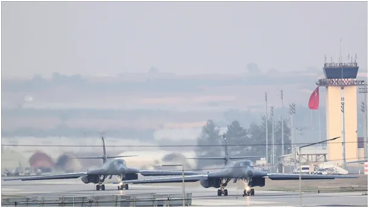
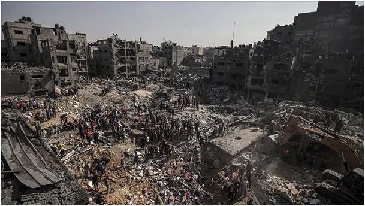

Czarodziejskie słowa Obamy włączają zasilanie amerykańskich wyrzutni z głowicami jądrowymi na Bliskim Wschodzie.
Turcy, jak na drugą armię NATO, są bardzo antyamerykańscy. Jest to duży plus dla Chin i całej Azji. Na terenie bazy İncirlik USA ma swoje pociski z głowicami jądrowymi skierowane głównie na Iran, ale też na Rosję. Podczas puczu w 2016 roku skierowanego przeciw Erdoğanowi, inicjator puczu skrył się w USA, gdzie ma ochronę do dziś.
Obecny prezydent Turcji wyłączył wtedy zasilanie elektryczne tej bazy, pod pretekstem, że w niej są niebezpieczni "wywrotowcy" chcący zbrojnie obalić demokratyczne władze. W przypadku ataku Iranu na Izrael zachód nie miał w tych dniach adekwatnej odpowiedzi militarnej. Dociśnięty do ściany Barack Obama w głównym paśmie amerykańskiej TV stanowczo powiedział, że Turcja i jej prezydent to jest crème de la crème światowej demokracji. Te czarodziejskie słowa przywróciły zasilanie amerykańskich wyrzutni z głowicami jądrowymi, a w Izraelu wtedy szybko spadło ciśnienie wielu pacjentom na kardiologii.
Wczoraj do tej bazy, przyleciały 2 strategiczne bombowce B-1B Lancers. Na takie dictum tureckie siły humanitarne (społeczeństwo), zbiera się do wielkiego marszu sprzeciwu przemocy w Gazie, i zapowiada marsz setek tysięcy Turków pod bazę z amerykańskimi zabawkami.
Turcja wiele lat temu już groziła, że wyrzuci wojsko USA z "tureckiej bazy İncirlik", z powodu kłamstw historycznych o Turcji w amerykańskiej prasie. Dziś stawka jest znacznie wyższa. Bombardowanie Gazy trwa, Turcy to najpoważniejsza siła w regionie i widzi swoją szansę na objęcie przywództwa w świecie Islamu, a konkuruje z Arabią Saudyjską i Iranem. Mentalnie bliżej im do Persów, świat arabski to ich byłe imperium którym zarządzali z podniesionym czołem.

Może się to skończyć rozmowami o szybkiej likwidacji amerykańskiej bazy. Wtedy USA może powstrzymać Izrael przed eskalacją nierównej wojny z cywilami.

Oby.
Paweł Klimczewski